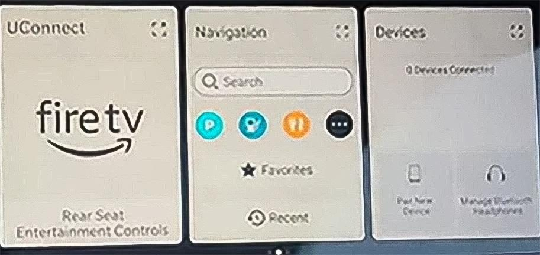
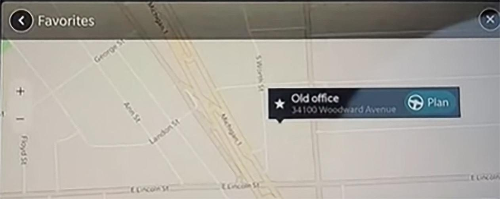
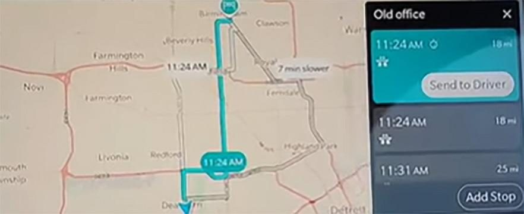

Sharing a favorite route from the passenger screen to the main screen
You can share navigation routes from the passenger screen to the main screen.
- Select Navigation from the passenger screen.
- Tap ★ Favorites.

- Select the destination and tap Plan.

- Tap Send to Driver. The route appears on the main screen.

- Tap Accept on the main screen.
- The route appears on the main and passenger screens.
Tip: The directions also appear on the driver cluster.